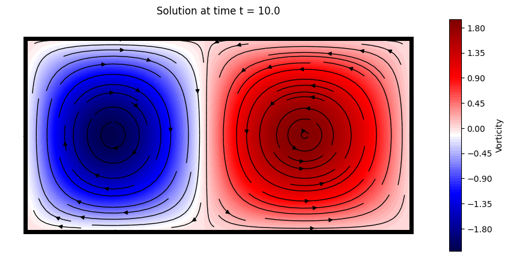
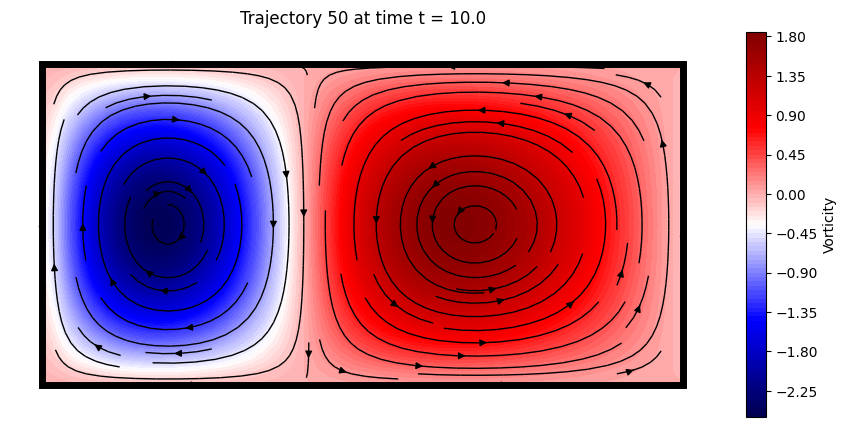
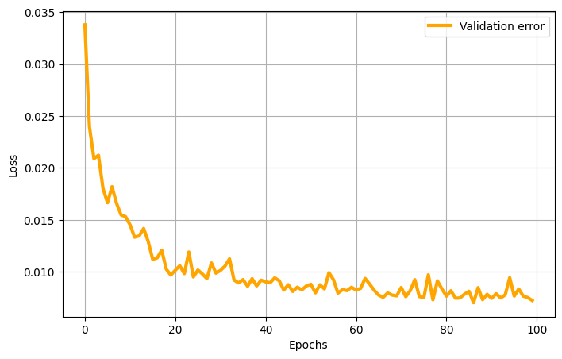
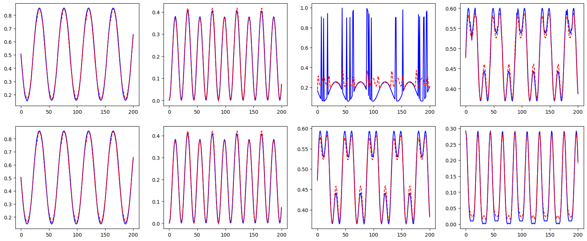
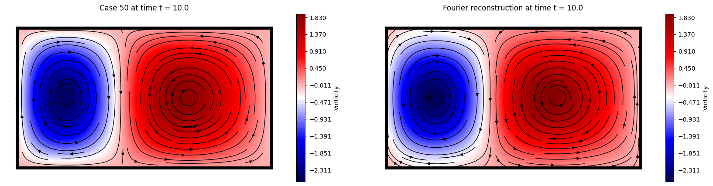
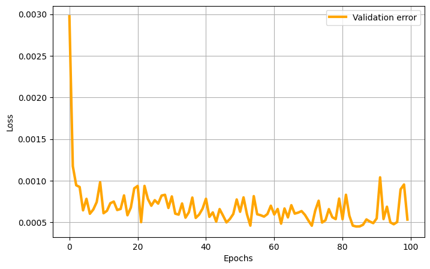
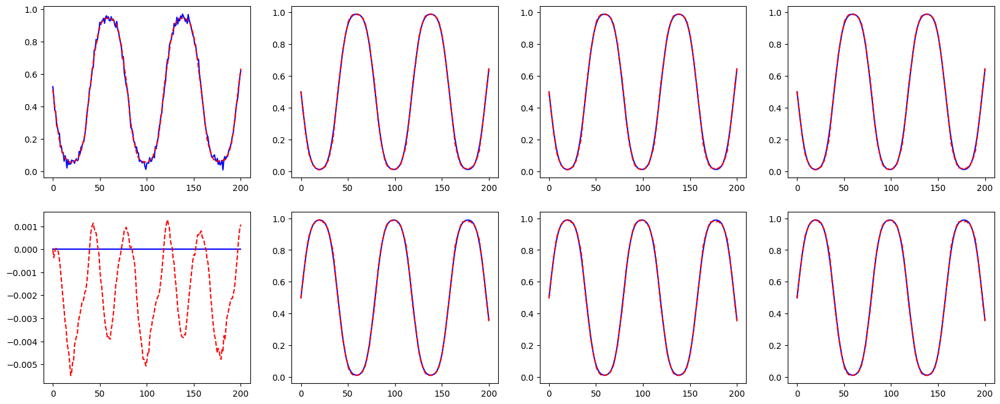
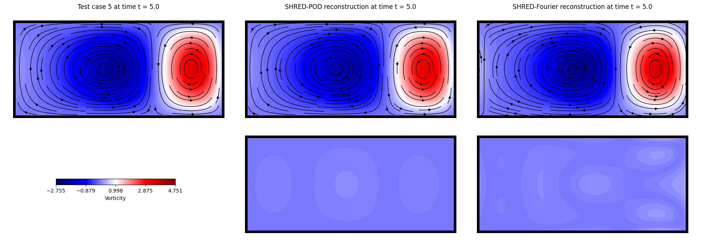

SHRED-ROM Tutorial on Double Gyre Flow#
Authors: Stefano Riva and Matteo Tomasetto

The double gyre flow is a time-dependent model for two counter-rotating vortices (gyres) in a rectangular domain. When time is introduced via a periodic perturbation, the central dividing line between the two gyres oscillates left and right, creating a time-varying velocity field that can lead to chaotic particle trajectories. The velocity field \(\mathbf{v} = [u, v]^T\) in the domain \([0, L_x] \times [0, L_y]\) and in the time interval \([0, T]\) is given by
where \(I\) is the intensity parameter, \(f(x, t) = \epsilon \sin(\omega t) x^2 + (1 - 2\epsilon \sin(\omega t)) x \), \(\epsilon\) and \(\omega\) are the perturbation amplitude and the frequency of the oscillation, respectively.
%load_ext autoreload
%autoreload 2
# PYSHRED
from pyshred import DataManager, SHRED, SHREDEngine, LSTM_Forecaster
# IMPORT LIBRARIES
import torch
import numpy as np
import matplotlib.pyplot as plt
A function to compute the velocity components \(u\) and \(v\) is provided below.
# DEFINE THE SYSTEM SOLVER
def double_gyre_flow(amplitude, frequency, x, y, t):
'''
Solve the double gyre flow problem
Inputs
amplitude (`float`)
frequency (`float`)
horizontal discretization (`np.array[float]`, shape: (ny,))
vertical discretization (`np.array[float]`, shape: (nx,))
time vector (`np.array[float]`, shape: (ntimes,))
Output
horizontal velocity matrix (`np.array[float]`, shape: (ntimes, nx * ny)
vertical velocity matrix (`np.array[float]`, shape: (ntimes, nx * ny)
'''
xgrid, ygrid = np.meshgrid(x, y) # spatial grid
u = np.zeros((len(t), len(x), len(y))) # horizontal velocity
v = np.zeros((len(t), len(x), len(y))) # vertical velocity
intensity = 0.1 # intensity parameter
f = lambda x,t: amplitude * np.sin(frequency * t) * x**2 + x - 2 * amplitude * np.sin(frequency * t) * x
# compute solution
for i in range(len(t)):
u[i] = (-np.pi * intensity * np.sin(np.pi * f(xgrid, t[i])) * np.cos(np.pi * ygrid)).T
v[i] = (np.pi * intensity * np.cos(np.pi * f(xgrid, t[i])) * np.sin(np.pi * ygrid) * (2 * amplitude * np.sin(frequency * t[i]) * xgrid + 1.0 - 2 * amplitude * np.sin(frequency * t[i]))).T
return u, v
Let us look at an example of the double gyre flow with the following parameters:
Amplitude \(\epsilon = 0.25\)
Frequency \(\omega = 5\)
# SOLVE THE SYSTEM FOR A FIXED TRANSPORT TERM
amplitude = 0.25 # amplitude
frequency = 5.0 # frequency
# spatial discretization
nx = 50
ny = 25
Lx = 2.0
Ly = 1.0
x = np.linspace(0, Lx, nx)
y = np.linspace(0, Ly, ny)
nstate = len(x) * len(y)
# temporal discretization
dt = 0.05
T = 10.0
t = np.arange(0, T + dt, dt)
ntimes = len(t)
u, v = double_gyre_flow(amplitude, frequency, x, y, t)
Let us plot the solution, in terms of the vorticity field \(w = -\partial u / \partial y + \partial v / \partial x\)
# SOLUTION VISUALIZATION
from ipywidgets import interact, FloatSlider
import matplotlib.patches as patches
def vorticity(u, v):
dx = Lx / nx
dy = Ly / ny
du_dy = np.gradient(u, dy, axis = 1)
dv_dx = np.gradient(v, dx, axis = 0)
return dv_dx - du_dy
def plot_solution(time):
which_time = (np.abs(t - time)).argmin()
offset = 0.1
plt.figure(figsize = (10,5))
cont = plt.contourf(x, y, vorticity(u[which_time], v[which_time]).T, cmap = 'seismic', levels = 100)
plt.colorbar(cont, label='Vorticity', orientation='vertical', pad=0.04, aspect=20, fraction=0.05)
plt.streamplot(x, y, u[which_time].T, v[which_time].T, color='black', linewidth = 1, density = 1)
plt.axis('off')
plt.axis([0 - offset, Lx + offset, 0 - offset, Ly + offset])
plt.title(f'Solution at time t = {round(time, 3)}')
plt.grid(True)
plt.gca().add_patch(patches.Rectangle((0, 0), Lx, Ly, linewidth = 5, edgecolor = 'black', facecolor = 'none'))
# interact(plot_solution, time = FloatSlider(value = t[0], min = t[0], max = t[-1], step = (t[1]-t[0]), description='time', layout={'width': '400px', 'height': '50px'}))
plot_solution(t[-1])

Let us generate the snapshots by sampling the velocity field for parameters \(\epsilon\in [0,0.5]\), \(\omega \in [0.5, 2\pi]\) (randomly sampled).
# DATA GENERATION
amplitude_range = np.array([0.0, 0.5])
frequency_range = np.array([0.5, 2*np.pi])
# spatial discretization
nx = 50
ny = 25
Lx = 2.0
Ly = 1.0
x = np.linspace(0, Lx, nx)
y = np.linspace(0, Ly, ny)
nstate = len(x) * len(y)
# temporal discretization
dt = 0.05
T = 10.0
t = np.arange(0, T + dt, dt)
ntimes = len(t)
# training data generation
ntrajectories = 100
U = np.zeros((ntrajectories, ntimes, nx, ny))
V = np.zeros((ntrajectories, ntimes, nx, ny))
parameters = np.zeros((ntrajectories, ntimes, 2)) # store amplitude and frequency
for i in range(ntrajectories):
amplitude = (amplitude_range[1] - amplitude_range[0]) * np.random.rand() + amplitude_range[0]
frequency = (frequency_range[1] - frequency_range[0]) * np.random.rand() + frequency_range[0]
U[i], V[i] = double_gyre_flow(amplitude, frequency, x, y, t)
parameters[i, :, 0] = amplitude
parameters[i, :, 1] = frequency
Here a trajectory is visualized
# DATA VISUALIZATION
from ipywidgets import interact, IntSlider
def plot_data(which_trajectory, which_time):
offset = 0.1
plt.figure(figsize = (10,5))
cont = plt.contourf(x, y, vorticity(U[which_trajectory, which_time], V[which_trajectory, which_time]).T, cmap = 'seismic', levels = 100)
plt.colorbar(cont, label='Vorticity', orientation='vertical', pad=0.04, aspect=20, fraction=0.05)
plt.streamplot(x, y, U[which_trajectory, which_time].T, V[which_trajectory, which_time].T, color='black', linewidth = 1, density = 1)
plt.axis('off')
plt.axis([0 - offset, Lx + offset, 0 - offset, Ly + offset])
plt.title(f'Trajectory {which_trajectory} at time t = {round(t[which_time], 3)}')
plt.grid(True)
plt.gca().add_patch(patches.Rectangle((0, 0), Lx, Ly, linewidth = 5, edgecolor = 'black', facecolor = 'none'))
# interact(plot_data, which_trajectory = IntSlider(min = 0, max = ntrajectories - 1, step = 1, description='Trajectory'), which_time = IntSlider(min = 0, max = ntimes - 1, step = 1, description='Time step'));
plot_data(50, -1)

SHallow REcurrent Decoder networks-based Reduced Order Modeling (SHRED-ROM)#
Let us assume to have three sensors in the domain measuring the horizontal velocity \(u(x_s,y_s,t;\epsilon, \omega)\) over time. SHRED-ROM aims to reconstruct the temporal evolution of the entire velocity \(\mathbf{v}(x,y,t;\epsilon, \omega) = [u(x,y,t;\epsilon, \omega), v(x,y,t;\epsilon, \omega)]^T\) starting from the limited sensor measurements available. In general, SHRED-ROM combines a recurrent neural network (LSTM), which encodes the temporal history of sensor values in multiple parametric regimes, and a shallow decoder, which projects the LSTM prediction to the (possibly high-dimensional) state dimension. Note that, to enhance computational efficiency and memory usage, dimensionality reduction strategies (such as, e.g., POD) may be considered to compress the training snapshots.
Two different compression strategies are available in this tutorial:
POD: Proper Orthogonal Decomposition, which computes the low-rank approximation of the training snapshots.
Fourier: Fourier decomposition, which computes the Fourier coefficients of the training snapshots.
U = U.reshape(ntrajectories, ntimes, nstate)
V = V.reshape(ntrajectories, ntimes, nstate)
POD-based compressive training#
The ParametricDataManager is initialized
from pyshred import ParametricDataManager, SHRED, ParametricSHREDEngine
# Initialize ParametricSHREDDataManager
manager_pod = ParametricDataManager(
lags = 25,
train_size = 0.8,
val_size = 0.1,
test_size = 0.1,
)
import warnings
warnings.filterwarnings("ignore")
Let us add the different fields, the component \(u\) is the one we want to reconstruct, while \(v\) is indirectly reconstructed. The parameters \(\epsilon\) and \(\omega\) are included as output of the SHRED architecture.
manager_pod.add_data(
data=U, # 3D array (parametric_trajectories, timesteps, field_dim)
id="U", # Unique identifier for the dataset
random=3, # Randomly select 3 sensor locations
compress=4 # Spatial compression
)
## Since no random selection is specified for the second dataset, no measurement locations will be selected
manager_pod.add_data(
data=V,
id="V",
compress=4
)
## Add parameters to the manager
manager_pod.add_data(
data=parameters,
id='mu',
compress=False,
)
If you want to add noise to the measurements (zero-mean Gaussian), it can added as follows:
manager_pod.sensor_summary_df
| data id | sensor_number | type | loc/traj | |
|---|---|---|---|---|
| 0 | U | 0 | stationary (random) | (450,) |
| 1 | U | 1 | stationary (random) | (696,) |
| 2 | U | 2 | stationary (random) | (1119,) |
noise_std = 0.005
random_noise = np.random.normal(loc=0, scale=noise_std, size=manager_pod.sensor_measurements_df.shape)
manager_pod.sensor_measurements_df += random_noise
Let us prepare the data by splitting them into train, valid and test sets.
train_dataset, val_dataset, test_dataset = manager_pod.prepare()
Definition of the SHRED architecture
shred_pod = SHRED(
sequence_model="LSTM",
decoder_model="MLP",
latent_forecaster=None
)
Let us fit the SHRED architecture
val_errors_shredpod = shred_pod.fit(
train_dataset=train_dataset,
val_dataset=val_dataset,
num_epochs=100,
patience=50,
verbose=True,
)
Fitting SHRED...
Epoch 1: Average training loss = 0.048769
Validation MSE (epoch 1): 0.033769
Epoch 2: Average training loss = 0.024560
Validation MSE (epoch 2): 0.023983
Epoch 3: Average training loss = 0.020259
Validation MSE (epoch 3): 0.020888
Epoch 4: Average training loss = 0.018009
Validation MSE (epoch 4): 0.021217
Epoch 5: Average training loss = 0.018030
Validation MSE (epoch 5): 0.018037
Epoch 6: Average training loss = 0.015617
Validation MSE (epoch 6): 0.016645
Epoch 7: Average training loss = 0.015672
Validation MSE (epoch 7): 0.018195
Epoch 8: Average training loss = 0.015270
Validation MSE (epoch 8): 0.016599
Epoch 9: Average training loss = 0.014198
Validation MSE (epoch 9): 0.015475
Epoch 10: Average training loss = 0.013217
Validation MSE (epoch 10): 0.015304
Epoch 11: Average training loss = 0.014081
Validation MSE (epoch 11): 0.014519
Epoch 12: Average training loss = 0.013127
Validation MSE (epoch 12): 0.013332
Epoch 13: Average training loss = 0.012611
Validation MSE (epoch 13): 0.013455
Epoch 14: Average training loss = 0.011910
Validation MSE (epoch 14): 0.014167
Epoch 15: Average training loss = 0.011451
Validation MSE (epoch 15): 0.012931
Epoch 16: Average training loss = 0.011435
Validation MSE (epoch 16): 0.011200
Epoch 17: Average training loss = 0.011174
Validation MSE (epoch 17): 0.011342
Epoch 18: Average training loss = 0.010193
Validation MSE (epoch 18): 0.012082
Epoch 19: Average training loss = 0.010594
Validation MSE (epoch 19): 0.010255
Epoch 20: Average training loss = 0.010028
Validation MSE (epoch 20): 0.009681
Epoch 21: Average training loss = 0.010194
Validation MSE (epoch 21): 0.010145
Epoch 22: Average training loss = 0.010055
Validation MSE (epoch 22): 0.010590
Epoch 23: Average training loss = 0.009914
Validation MSE (epoch 23): 0.009824
Epoch 24: Average training loss = 0.009833
Validation MSE (epoch 24): 0.011903
Epoch 25: Average training loss = 0.009926
Validation MSE (epoch 25): 0.009502
Epoch 26: Average training loss = 0.009452
Validation MSE (epoch 26): 0.010169
Epoch 27: Average training loss = 0.009565
Validation MSE (epoch 27): 0.009790
Epoch 28: Average training loss = 0.009618
Validation MSE (epoch 28): 0.009341
Epoch 29: Average training loss = 0.009510
Validation MSE (epoch 29): 0.010851
Epoch 30: Average training loss = 0.010536
Validation MSE (epoch 30): 0.009865
Epoch 31: Average training loss = 0.010857
Validation MSE (epoch 31): 0.010132
Epoch 32: Average training loss = 0.010034
Validation MSE (epoch 32): 0.010550
Epoch 33: Average training loss = 0.009805
Validation MSE (epoch 33): 0.011249
Epoch 34: Average training loss = 0.009578
Validation MSE (epoch 34): 0.009207
Epoch 35: Average training loss = 0.009322
Validation MSE (epoch 35): 0.008932
Epoch 36: Average training loss = 0.009408
Validation MSE (epoch 36): 0.009249
Epoch 37: Average training loss = 0.009532
Validation MSE (epoch 37): 0.008605
Epoch 38: Average training loss = 0.009032
Validation MSE (epoch 38): 0.009340
Epoch 39: Average training loss = 0.009478
Validation MSE (epoch 39): 0.008643
Epoch 40: Average training loss = 0.009637
Validation MSE (epoch 40): 0.009194
Epoch 41: Average training loss = 0.008968
Validation MSE (epoch 41): 0.009029
Epoch 42: Average training loss = 0.009313
Validation MSE (epoch 42): 0.008953
Epoch 43: Average training loss = 0.008661
Validation MSE (epoch 43): 0.009417
Epoch 44: Average training loss = 0.008871
Validation MSE (epoch 44): 0.009143
Epoch 45: Average training loss = 0.008713
Validation MSE (epoch 45): 0.008243
Epoch 46: Average training loss = 0.008516
Validation MSE (epoch 46): 0.008760
Epoch 47: Average training loss = 0.008852
Validation MSE (epoch 47): 0.008106
Epoch 48: Average training loss = 0.008991
Validation MSE (epoch 48): 0.008523
Epoch 49: Average training loss = 0.009202
Validation MSE (epoch 49): 0.008260
Epoch 50: Average training loss = 0.008984
Validation MSE (epoch 50): 0.008638
Epoch 51: Average training loss = 0.008913
Validation MSE (epoch 51): 0.008798
Epoch 52: Average training loss = 0.008750
Validation MSE (epoch 52): 0.007973
Epoch 53: Average training loss = 0.008583
Validation MSE (epoch 53): 0.008755
Epoch 54: Average training loss = 0.008643
Validation MSE (epoch 54): 0.008356
Epoch 55: Average training loss = 0.008989
Validation MSE (epoch 55): 0.009911
Epoch 56: Average training loss = 0.008911
Validation MSE (epoch 56): 0.009242
Epoch 57: Average training loss = 0.009598
Validation MSE (epoch 57): 0.007947
Epoch 58: Average training loss = 0.008771
Validation MSE (epoch 58): 0.008283
Epoch 59: Average training loss = 0.008395
Validation MSE (epoch 59): 0.008188
Epoch 60: Average training loss = 0.008311
Validation MSE (epoch 60): 0.008512
Epoch 61: Average training loss = 0.008956
Validation MSE (epoch 61): 0.008251
Epoch 62: Average training loss = 0.008933
Validation MSE (epoch 62): 0.008402
Epoch 63: Average training loss = 0.008697
Validation MSE (epoch 63): 0.009362
Epoch 64: Average training loss = 0.009346
Validation MSE (epoch 64): 0.008823
Epoch 65: Average training loss = 0.008487
Validation MSE (epoch 65): 0.008223
Epoch 66: Average training loss = 0.008970
Validation MSE (epoch 66): 0.007755
Epoch 67: Average training loss = 0.008109
Validation MSE (epoch 67): 0.007536
Epoch 68: Average training loss = 0.008115
Validation MSE (epoch 68): 0.007968
Epoch 69: Average training loss = 0.008414
Validation MSE (epoch 69): 0.007755
Epoch 70: Average training loss = 0.008343
Validation MSE (epoch 70): 0.007679
Epoch 71: Average training loss = 0.008369
Validation MSE (epoch 71): 0.008491
Epoch 72: Average training loss = 0.008931
Validation MSE (epoch 72): 0.007601
Epoch 73: Average training loss = 0.008175
Validation MSE (epoch 73): 0.008197
Epoch 74: Average training loss = 0.008743
Validation MSE (epoch 74): 0.009242
Epoch 75: Average training loss = 0.008629
Validation MSE (epoch 75): 0.007614
Epoch 76: Average training loss = 0.008238
Validation MSE (epoch 76): 0.007511
Epoch 77: Average training loss = 0.008608
Validation MSE (epoch 77): 0.009713
Epoch 78: Average training loss = 0.009083
Validation MSE (epoch 78): 0.007302
Epoch 79: Average training loss = 0.008555
Validation MSE (epoch 79): 0.009131
Epoch 80: Average training loss = 0.008692
Validation MSE (epoch 80): 0.008350
Epoch 81: Average training loss = 0.008351
Validation MSE (epoch 81): 0.007651
Epoch 82: Average training loss = 0.008126
Validation MSE (epoch 82): 0.008180
Epoch 83: Average training loss = 0.008174
Validation MSE (epoch 83): 0.007459
Epoch 84: Average training loss = 0.008057
Validation MSE (epoch 84): 0.007481
Epoch 85: Average training loss = 0.008541
Validation MSE (epoch 85): 0.007852
Epoch 86: Average training loss = 0.008556
Validation MSE (epoch 86): 0.008122
Epoch 87: Average training loss = 0.008124
Validation MSE (epoch 87): 0.007018
Epoch 88: Average training loss = 0.007865
Validation MSE (epoch 88): 0.008479
Epoch 89: Average training loss = 0.008558
Validation MSE (epoch 89): 0.007316
Epoch 90: Average training loss = 0.007718
Validation MSE (epoch 90): 0.007830
Epoch 91: Average training loss = 0.008219
Validation MSE (epoch 91): 0.007448
Epoch 92: Average training loss = 0.008254
Validation MSE (epoch 92): 0.007891
Epoch 93: Average training loss = 0.008132
Validation MSE (epoch 93): 0.007479
Epoch 94: Average training loss = 0.007933
Validation MSE (epoch 94): 0.007772
Epoch 95: Average training loss = 0.008519
Validation MSE (epoch 95): 0.009434
Epoch 96: Average training loss = 0.008763
Validation MSE (epoch 96): 0.007659
Epoch 97: Average training loss = 0.008736
Validation MSE (epoch 97): 0.008347
Epoch 98: Average training loss = 0.009099
Validation MSE (epoch 98): 0.007656
Epoch 99: Average training loss = 0.008044
Validation MSE (epoch 99): 0.007515
Epoch 100: Average training loss = 0.007707
Validation MSE (epoch 100): 0.007233
Here the validation loss is plotted
plt.figure(figsize = (8,5))
plt.plot(val_errors_shredpod, 'orange', linewidth = 3, label = 'Validation error')
plt.xlabel('Epochs')
plt.ylabel('Loss')
plt.legend()
plt.grid(True)

Let us evaluate the SHRED model on the different sets
print(f"Train MSE: {shred_pod.evaluate(dataset=train_dataset):.3f}")
print(f"Val MSE: {shred_pod.evaluate(dataset=val_dataset):.3f}")
print(f"Test MSE: {shred_pod.evaluate(dataset=test_dataset):.3f}")
Train MSE: 0.007
Val MSE: 0.007
Test MSE: 0.007
Let us check the reconstruction of the POD coefficients
which_param = 0 # Index of the parameter to visualize
fig, axs = plt.subplots(2, 4, figsize=(20, 8))
for i in range(4):
axs[0, i].plot(test_dataset.Y[ntimes * which_param:ntimes * (which_param + 1), i].cpu().numpy(), 'b', label='True U')
axs[0, i].plot(shred_pod(test_dataset.X)[ntimes * which_param:ntimes * (which_param + 1), i].cpu().detach().numpy(), 'r--', label='True U')
axs[1, i].plot(test_dataset.Y[ntimes * which_param:ntimes * (which_param + 1), i + 4].cpu().numpy(), 'b', label='True V')
axs[1, i].plot(shred_pod(test_dataset.X)[ntimes * which_param:ntimes * (which_param + 1), i + 4].cpu().detach().numpy(), 'r--', label='True V')

Let us check the reconstruction of the double gyre flow
Fourier-based compressive training#
freq_cutoff = 0.05
freq_x = np.fft.fftfreq(nx)
freq_y = np.fft.fftfreq(ny)
freq_x_grid, freq_y_grid = np.meshgrid(freq_x, freq_y)
mask_x = np.abs(freq_x_grid.T) <= freq_cutoff
# Transform the data to frequency domain - U
U_fft = np.fft.fft2(U.reshape(ntrajectories, ntimes, nx, ny), axes = (-2, -1))
U_fft[:,:,~mask_x] = 0
U_proj = U_fft[:,:,mask_x]
U_proj_real = np.real(U_proj)
U_proj_imag = np.imag(U_proj)
Fourier_modes_x = U_proj.shape[-1]
# Transform the data to frequency domain - V
mask_y = np.abs(freq_y_grid.T) <= freq_cutoff
V_fft = np.fft.fft2(V.reshape(ntrajectories, ntimes, nx, ny), axes = (-2, -1))
V_fft[:,:,~mask_y] = 0
V_proj = V_fft[:,:,mask_y]
V_proj_real = np.real(V_proj)
V_proj_imag = np.imag(V_proj)
Fourier_modes_y = V_proj.shape[-1]
Let us plot the projected and reconstructed velocity fields
U_recons = np.fft.ifft2(U_fft).real
V_recons = np.fft.ifft2(V_fft).real
def plot_fourier_data(which_test_trajectory, which_time):
offset = 0.1
_min = vorticity(U[which_test_trajectory, which_time].reshape(nx, ny), V[which_test_trajectory, which_time].reshape(nx, ny)).min()
_max = vorticity(U[which_test_trajectory, which_time].reshape(nx, ny), V[which_test_trajectory, which_time].reshape(nx, ny)).max()
levels = np.linspace(_min, _max, 100) * 1.05
plt.figure(figsize = (20,5))
plt.subplot(1, 2, 1)
cont = plt.contourf(x, y, vorticity(U[which_test_trajectory, which_time].reshape(nx, ny), V[which_test_trajectory, which_time].reshape(nx, ny)).T, cmap = 'seismic', levels = levels)
plt.streamplot(x, y, U[which_test_trajectory, which_time].reshape(nx, ny).T, V[which_test_trajectory, which_time].reshape(nx, ny).T, color='black', linewidth = 1, density = 1)
plt.axis('off')
plt.axis([0 - offset, Lx + offset, 0 - offset, Ly + offset])
plt.title(f'Case {which_test_trajectory} at time t = {round(t[which_time], 3)}')
plt.grid(True)
plt.gca().add_patch(patches.Rectangle((0, 0), Lx, Ly, linewidth = 5, edgecolor = 'black', facecolor = 'none'))
plt.colorbar(cont, label='Vorticity', orientation='vertical', pad=0.04, aspect=20, fraction=0.05)
plt.subplot(1, 2, 2)
cont = plt.contourf(x, y, vorticity(U_recons[which_test_trajectory, which_time].reshape(nx, ny), V_recons[which_test_trajectory, which_time].reshape(nx, ny)).T, cmap = 'seismic', levels = levels)
plt.streamplot(x, y, U_recons[which_test_trajectory, which_time].reshape(nx, ny).T, V_recons[which_test_trajectory, which_time].reshape(nx, ny).T, color='black', linewidth = 1, density = 1)
plt.axis('off')
plt.axis([0 - offset, Lx + offset, 0 - offset, Ly + offset])
plt.title(f'Fourier reconstruction at time t = {round(t[which_time], 3)}')
plt.grid(True)
plt.gca().add_patch(patches.Rectangle((0, 0), Lx, Ly, linewidth = 5, edgecolor = 'black', facecolor = 'none'))
plt.colorbar(cont, label='Vorticity', orientation='vertical', pad=0.04, aspect=20, fraction=0.05)
# interact(plot_fourier_data, which_test_trajectory = IntSlider(min = 0, max = ntrajectories - 1, step = 1, description='Test case'), which_time = IntSlider(min = 0, max = ntimes - 1, step = 1, description='Time step'));
plot_fourier_data(50, -1)

Let us compute the measurement field from \(u\) using the same input positions as before
sens_locs = [manager_pod.sensor_summary_df['loc/traj'][i][0] for i in range(len(manager_pod.sensor_summary_df))]
measurements = U[:, :, sens_locs]
# Add noise to the measurements
measurements += np.random.normal(loc=0, scale=noise_std, size=measurements.shape)
Let us initialize the ParametricDataManager for Fourier-based training
manager_fourier = ParametricDataManager(
lags = 25,
train_size = 0.8,
val_size = 0.1,
test_size = 0.1
)
Let us add the different fields, the component \(u\) is the one we want to reconstruct, while \(v\) is indirectly reconstructed. The parameters \(\epsilon\) and \(\omega\) are included as output of the SHRED architecture.
# Real and imaginary parts have to be added separately
manager_fourier.add_data(
data=U_proj_real,
id="Ufft_real",
measurements=measurements, # Use the measurements with noise already computed
compress=False
)
manager_fourier.add_data(
data=U_proj_imag,
id="Ufft_imag",
compress=False
)
# Add the second dataset (V) in the same way
manager_fourier.add_data(
data=V_proj_real,
id="Vfft_real",
compress=False
)
manager_fourier.add_data(
data=V_proj_imag,
id="Vfft_imag",
compress=False
)
## Add parameters to the manager
manager_fourier.add_data(
data=parameters,
id='mu',
compress=False,
)
Let us prepare the data by splitting them into train, valid and test sets.
train_dataset, val_dataset, test_dataset= manager_fourier.prepare()
Definition of the SHRED architecture
shred_fourier = SHRED(
sequence_model="LSTM",
decoder_model="MLP",
latent_forecaster=None
)
Let us fit the SHRED architecture
val_errors_shredfourier = shred_fourier.fit(
train_dataset=train_dataset,
val_dataset=val_dataset,
num_epochs=100,
patience=50,
verbose=True,
)
Fitting SHRED...
Epoch 1: Average training loss = 0.044613
Validation MSE (epoch 1): 0.002973
Epoch 2: Average training loss = 0.003913
Validation MSE (epoch 2): 0.001174
Epoch 3: Average training loss = 0.002434
Validation MSE (epoch 3): 0.000945
Epoch 4: Average training loss = 0.001967
Validation MSE (epoch 4): 0.000924
Epoch 5: Average training loss = 0.001585
Validation MSE (epoch 5): 0.000644
Epoch 6: Average training loss = 0.001420
Validation MSE (epoch 6): 0.000782
Epoch 7: Average training loss = 0.001382
Validation MSE (epoch 7): 0.000603
Epoch 8: Average training loss = 0.001323
Validation MSE (epoch 8): 0.000653
Epoch 9: Average training loss = 0.001344
Validation MSE (epoch 9): 0.000743
Epoch 10: Average training loss = 0.001090
Validation MSE (epoch 10): 0.000981
Epoch 11: Average training loss = 0.001128
Validation MSE (epoch 11): 0.000609
Epoch 12: Average training loss = 0.000906
Validation MSE (epoch 12): 0.000638
Epoch 13: Average training loss = 0.000987
Validation MSE (epoch 13): 0.000729
Epoch 14: Average training loss = 0.000925
Validation MSE (epoch 14): 0.000749
Epoch 15: Average training loss = 0.000925
Validation MSE (epoch 15): 0.000648
Epoch 16: Average training loss = 0.000901
Validation MSE (epoch 16): 0.000660
Epoch 17: Average training loss = 0.000935
Validation MSE (epoch 17): 0.000823
Epoch 18: Average training loss = 0.000879
Validation MSE (epoch 18): 0.000584
Epoch 19: Average training loss = 0.001090
Validation MSE (epoch 19): 0.000677
Epoch 20: Average training loss = 0.000895
Validation MSE (epoch 20): 0.000908
Epoch 21: Average training loss = 0.000846
Validation MSE (epoch 21): 0.000937
Epoch 22: Average training loss = 0.000871
Validation MSE (epoch 22): 0.000502
Epoch 23: Average training loss = 0.000842
Validation MSE (epoch 23): 0.000937
Epoch 24: Average training loss = 0.000933
Validation MSE (epoch 24): 0.000779
Epoch 25: Average training loss = 0.000731
Validation MSE (epoch 25): 0.000699
Epoch 26: Average training loss = 0.000782
Validation MSE (epoch 26): 0.000766
Epoch 27: Average training loss = 0.000845
Validation MSE (epoch 27): 0.000724
Epoch 28: Average training loss = 0.000795
Validation MSE (epoch 28): 0.000821
Epoch 29: Average training loss = 0.000805
Validation MSE (epoch 29): 0.000830
Epoch 30: Average training loss = 0.000775
Validation MSE (epoch 30): 0.000672
Epoch 31: Average training loss = 0.000700
Validation MSE (epoch 31): 0.000811
Epoch 32: Average training loss = 0.000781
Validation MSE (epoch 32): 0.000604
Epoch 33: Average training loss = 0.000729
Validation MSE (epoch 33): 0.000592
Epoch 34: Average training loss = 0.000724
Validation MSE (epoch 34): 0.000726
Epoch 35: Average training loss = 0.000898
Validation MSE (epoch 35): 0.000556
Epoch 36: Average training loss = 0.000732
Validation MSE (epoch 36): 0.000621
Epoch 37: Average training loss = 0.000834
Validation MSE (epoch 37): 0.000797
Epoch 38: Average training loss = 0.000686
Validation MSE (epoch 38): 0.000553
Epoch 39: Average training loss = 0.000686
Validation MSE (epoch 39): 0.000593
Epoch 40: Average training loss = 0.000749
Validation MSE (epoch 40): 0.000664
Epoch 41: Average training loss = 0.000767
Validation MSE (epoch 41): 0.000783
Epoch 42: Average training loss = 0.000819
Validation MSE (epoch 42): 0.000565
Epoch 43: Average training loss = 0.000788
Validation MSE (epoch 43): 0.000619
Epoch 44: Average training loss = 0.000685
Validation MSE (epoch 44): 0.000508
Epoch 45: Average training loss = 0.000792
Validation MSE (epoch 45): 0.000659
Epoch 46: Average training loss = 0.000610
Validation MSE (epoch 46): 0.000580
Epoch 47: Average training loss = 0.000692
Validation MSE (epoch 47): 0.000499
Epoch 48: Average training loss = 0.000657
Validation MSE (epoch 48): 0.000539
Epoch 49: Average training loss = 0.000655
Validation MSE (epoch 49): 0.000600
Epoch 50: Average training loss = 0.000813
Validation MSE (epoch 50): 0.000774
Epoch 51: Average training loss = 0.000659
Validation MSE (epoch 51): 0.000626
Epoch 52: Average training loss = 0.000694
Validation MSE (epoch 52): 0.000799
Epoch 53: Average training loss = 0.000672
Validation MSE (epoch 53): 0.000598
Epoch 54: Average training loss = 0.000642
Validation MSE (epoch 54): 0.000460
Epoch 55: Average training loss = 0.000656
Validation MSE (epoch 55): 0.000814
Epoch 56: Average training loss = 0.000635
Validation MSE (epoch 56): 0.000597
Epoch 57: Average training loss = 0.000647
Validation MSE (epoch 57): 0.000585
Epoch 58: Average training loss = 0.000701
Validation MSE (epoch 58): 0.000568
Epoch 59: Average training loss = 0.000583
Validation MSE (epoch 59): 0.000599
Epoch 60: Average training loss = 0.000724
Validation MSE (epoch 60): 0.000699
Epoch 61: Average training loss = 0.000813
Validation MSE (epoch 61): 0.000594
Epoch 62: Average training loss = 0.000617
Validation MSE (epoch 62): 0.000660
Epoch 63: Average training loss = 0.000710
Validation MSE (epoch 63): 0.000484
Epoch 64: Average training loss = 0.000600
Validation MSE (epoch 64): 0.000666
Epoch 65: Average training loss = 0.000634
Validation MSE (epoch 65): 0.000559
Epoch 66: Average training loss = 0.000702
Validation MSE (epoch 66): 0.000705
Epoch 67: Average training loss = 0.000643
Validation MSE (epoch 67): 0.000604
Epoch 68: Average training loss = 0.000633
Validation MSE (epoch 68): 0.000616
Epoch 69: Average training loss = 0.000706
Validation MSE (epoch 69): 0.000635
Epoch 70: Average training loss = 0.000687
Validation MSE (epoch 70): 0.000589
Epoch 71: Average training loss = 0.000599
Validation MSE (epoch 71): 0.000522
Epoch 72: Average training loss = 0.000560
Validation MSE (epoch 72): 0.000459
Epoch 73: Average training loss = 0.000608
Validation MSE (epoch 73): 0.000640
Epoch 74: Average training loss = 0.000704
Validation MSE (epoch 74): 0.000759
Epoch 75: Average training loss = 0.000736
Validation MSE (epoch 75): 0.000497
Epoch 76: Average training loss = 0.000740
Validation MSE (epoch 76): 0.000525
Epoch 77: Average training loss = 0.000518
Validation MSE (epoch 77): 0.000658
Epoch 78: Average training loss = 0.000582
Validation MSE (epoch 78): 0.000561
Epoch 79: Average training loss = 0.000732
Validation MSE (epoch 79): 0.000538
Epoch 80: Average training loss = 0.000575
Validation MSE (epoch 80): 0.000785
Epoch 81: Average training loss = 0.000730
Validation MSE (epoch 81): 0.000537
Epoch 82: Average training loss = 0.000629
Validation MSE (epoch 82): 0.000830
Epoch 83: Average training loss = 0.000953
Validation MSE (epoch 83): 0.000578
Epoch 84: Average training loss = 0.000577
Validation MSE (epoch 84): 0.000460
Epoch 85: Average training loss = 0.000554
Validation MSE (epoch 85): 0.000450
Epoch 86: Average training loss = 0.000480
Validation MSE (epoch 86): 0.000451
Epoch 87: Average training loss = 0.000559
Validation MSE (epoch 87): 0.000470
Epoch 88: Average training loss = 0.000524
Validation MSE (epoch 88): 0.000534
Epoch 89: Average training loss = 0.000720
Validation MSE (epoch 89): 0.000509
Epoch 90: Average training loss = 0.000691
Validation MSE (epoch 90): 0.000490
Epoch 91: Average training loss = 0.000882
Validation MSE (epoch 91): 0.000547
Epoch 92: Average training loss = 0.000548
Validation MSE (epoch 92): 0.001040
Epoch 93: Average training loss = 0.000475
Validation MSE (epoch 93): 0.000539
Epoch 94: Average training loss = 0.000855
Validation MSE (epoch 94): 0.000687
Epoch 95: Average training loss = 0.000781
Validation MSE (epoch 95): 0.000499
Epoch 96: Average training loss = 0.000515
Validation MSE (epoch 96): 0.000477
Epoch 97: Average training loss = 0.000489
Validation MSE (epoch 97): 0.000504
Epoch 98: Average training loss = 0.000588
Validation MSE (epoch 98): 0.000896
Epoch 99: Average training loss = 0.000825
Validation MSE (epoch 99): 0.000954
Epoch 100: Average training loss = 0.000549
Validation MSE (epoch 100): 0.000533
Here the validation loss is plotted
plt.figure(figsize = (8,5))
plt.plot(val_errors_shredfourier, 'orange', linewidth = 3, label = 'Validation error')
plt.xlabel('Epochs')
plt.ylabel('Loss')
plt.legend()
plt.grid(True)

Let us evaluate the SHRED model on the different sets
print(f"Train MSE: {shred_fourier.evaluate(dataset=train_dataset):.5f}")
print(f"Val MSE: {shred_fourier.evaluate(dataset=val_dataset):.5f}")
print(f"Test MSE: {shred_fourier.evaluate(dataset=test_dataset):.5f}")
Train MSE: 0.00040
Val MSE: 0.00053
Test MSE: 0.00039
Let us check the reconstruction of the Fourier coefficients
which_param = 5 # Index of the parameter to visualize
fig, axs = plt.subplots(2, 4, figsize=(20, 8))
for i in range(4):
axs[0, i].plot(test_dataset.Y[ntimes * which_param:ntimes * (which_param + 1), i].cpu().numpy(), 'b', label='True U')
axs[0, i].plot(shred_fourier(test_dataset.X)[ntimes * which_param:ntimes * (which_param + 1), i].cpu().detach().numpy(), 'r--', label='True U')
axs[1, i].plot(test_dataset.Y[ntimes * which_param:ntimes * (which_param + 1), i + 125].cpu().numpy(), 'b', label='True V')
axs[1, i].plot(shred_fourier(test_dataset.X)[ntimes * which_param:ntimes * (which_param + 1), i + 125].cpu().detach().numpy(), 'r--', label='True V')

Comparison of POD and Fourier-based training#
Let us define the different engines for evaluations
engine_pod = ParametricSHREDEngine(manager_pod, shred_pod)
engine_fourier = ParametricSHREDEngine(manager_fourier, shred_fourier)
Let us compute the different output of each SHRED model:
POD-based is directly embedded in the SHRED model, thus the output is the reconstructed fields
Fourier-based is not directly embedded in the SHRED model, thus the output is the Fourier coefficients of the reconstructed fields
ntest = manager_fourier.test_indices.shape[0]
Utest = U[manager_pod.test_indices] # assumed that fourier and pod test indices are the same
Vtest = V[manager_pod.test_indices] # assumed that fourier and pod test indices are the same
# POD
pod_test_reconstruction = engine_pod.decode(engine_pod.sensor_to_latent(manager_pod.test_sensor_measurements))
pod_test_reconstruction['U'] = pod_test_reconstruction['U'].reshape(ntest, ntimes, -1)
pod_test_reconstruction['V'] = pod_test_reconstruction['V'].reshape(ntest, ntimes, -1)
# Fourier
fourier_coeffs_test_reconstruction = engine_fourier.decode(engine_fourier.sensor_to_latent(manager_fourier.test_sensor_measurements))
def fourier_to_rec(fourier_coeff, mask):
_proj_hat = fourier_coeff.reshape(ntest, ntimes, -1)
_fft_hat = np.zeros((ntest, ntimes, nx, ny), dtype=np.complex128)
_fft_hat[:,:,mask] = _proj_hat
return np.fft.ifft2(_fft_hat).real
fourier_test_reconstrucion = dict()
fourier_test_reconstrucion['U'] = fourier_to_rec(fourier_coeffs_test_reconstruction['Ufft_real'] + 1j * fourier_coeffs_test_reconstruction['Ufft_imag'], mask_x).reshape(ntest, ntimes, -1)
fourier_test_reconstrucion['V'] = fourier_to_rec(fourier_coeffs_test_reconstruction['Vfft_real'] + 1j * fourier_coeffs_test_reconstruction['Vfft_imag'], mask_y).reshape(ntest, ntimes, -1)
fourier_test_reconstrucion['mu'] = fourier_coeffs_test_reconstruction['mu'].reshape(ntest, ntimes, -1)
Let us reshape all the outputs to be compatible with the plotting functions
Utest = Utest.reshape(ntest, ntimes, nx, ny)
Vtest = Vtest.reshape(ntest, ntimes, nx, ny)
# POD
pod_test_reconstruction['U'] = pod_test_reconstruction['U'].reshape(ntest, ntimes, nx, ny)
pod_test_reconstruction['V'] = pod_test_reconstruction['V'].reshape(ntest, ntimes, nx, ny)
# Fourier
fourier_test_reconstrucion['U'] = fourier_test_reconstrucion['U'].reshape(ntest, ntimes, nx, ny)
fourier_test_reconstrucion['V'] = fourier_test_reconstrucion['V'].reshape(ntest, ntimes, nx, ny)
Let us plot the reconstructed fields for both POD and Fourier-based training
def plot_shred_reconstruction(which_test_trajectory, which_time):
offset = 0.1
fig, axs = plt.subplots(2, 3, figsize=(8*3, 8))
levels = np.linspace(vorticity(Utest[which_test_trajectory, which_time], Vtest[which_test_trajectory, which_time]).min(),
vorticity(Utest[which_test_trajectory, which_time], Vtest[which_test_trajectory, which_time]).max(),
100) * 1.4
cont = axs[0,0].contourf(x,y, vorticity(Utest[which_test_trajectory, which_time], Vtest[which_test_trajectory, which_time]).T, cmap = 'seismic', levels = levels)
axs[0,0].streamplot(x, y, Utest[which_test_trajectory, which_time].T, Vtest[which_test_trajectory, which_time].T, color='black', linewidth = 1, density = 1)
axs[0,1].contourf(x, y, vorticity(pod_test_reconstruction['U'][which_test_trajectory, which_time], pod_test_reconstruction['V'][which_test_trajectory, which_time]).T, cmap = 'seismic', levels = levels)
axs[0,1].streamplot(x, y, pod_test_reconstruction['U'][which_test_trajectory, which_time].T, pod_test_reconstruction['V'][which_test_trajectory, which_time].T, color='black', linewidth = 1, density = 1)
axs[0,2].contourf(x, y, vorticity(fourier_test_reconstrucion['U'][which_test_trajectory, which_time], fourier_test_reconstrucion['V'][which_test_trajectory, which_time]).T, cmap = 'seismic', levels = levels)
axs[0,2].streamplot(x, y, fourier_test_reconstrucion['U'][which_test_trajectory, which_time].T, fourier_test_reconstrucion['V'][which_test_trajectory, which_time].T, color='black', linewidth = 1, density = 1)
for ax in axs[0]:
ax.axis('off')
ax.axis([0 - offset, Lx + offset, 0 - offset, Ly + offset])
ax.grid()
ax.add_patch(patches.Rectangle((0, 0), Lx, Ly, linewidth = 5, edgecolor = 'black', facecolor = 'none'))
cbar = fig.colorbar(cont, ax=axs[1,0], label='Vorticity', orientation='horizontal', pad=0.04, aspect=20, fraction=0.05)
cbar.ax.set_xticks(np.linspace(levels.min(), levels.max(), 5))
axs[1,0].axis('off')
axs[1,1].contourf(x, y, np.abs(vorticity(pod_test_reconstruction['U'][which_test_trajectory, which_time], pod_test_reconstruction['V'][which_test_trajectory, which_time]).T -
vorticity(Utest[which_test_trajectory, which_time], Vtest[which_test_trajectory, which_time]).T), cmap='seismic', levels=levels)
axs[1,2].contourf(x, y, np.abs(vorticity(fourier_test_reconstrucion['U'][which_test_trajectory, which_time], fourier_test_reconstrucion['V'][which_test_trajectory, which_time]).T -
vorticity(Utest[which_test_trajectory, which_time], Vtest[which_test_trajectory, which_time]).T), cmap='seismic', levels=levels)
axs[1,1].axis('off')
axs[1,2].axis('off')
axs[1,1].add_patch(patches.Rectangle((0, 0), Lx, Ly, linewidth = 5, edgecolor = 'black', facecolor = 'none'))
axs[1,2].add_patch(patches.Rectangle((0, 0), Lx, Ly, linewidth = 5, edgecolor = 'black', facecolor = 'none'))
axs[1,1].axis([0 - offset, Lx + offset, 0 - offset, Ly + offset])
axs[1,2].axis([0 - offset, Lx + offset, 0 - offset, Ly + offset])
axs[0, 0].set_title(f'Test case {which_test_trajectory} at time t = {round(t[which_time], 3)}')
axs[0, 1].set_title(f'SHRED-POD reconstruction at time t = {round(t[which_time], 3)}')
axs[0, 2].set_title(f'SHRED-Fourier reconstruction at time t = {round(t[which_time], 3)}')
fig.subplots_adjust(wspace=0.01, hspace=0.01)
cbar.ax.set_position([0.15, 0.3, 0.2, 0.02])
# interact(plot_shred_reconstruction, which_test_trajectory = IntSlider(value = 0, min = 0, max = ntest - 1, description='Test case'), which_time = IntSlider(min = 0, max = ntimes - 1, step = 1, description='Time step'));
plot_shred_reconstruction(5, 100)
